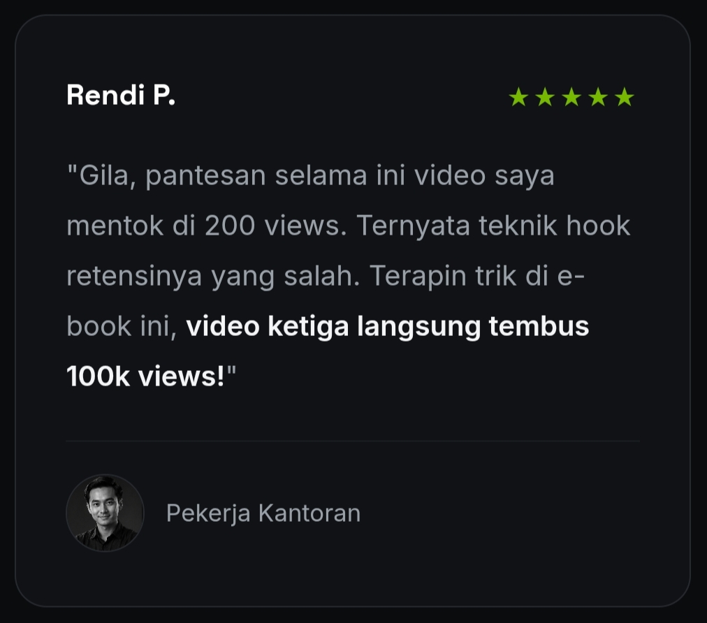
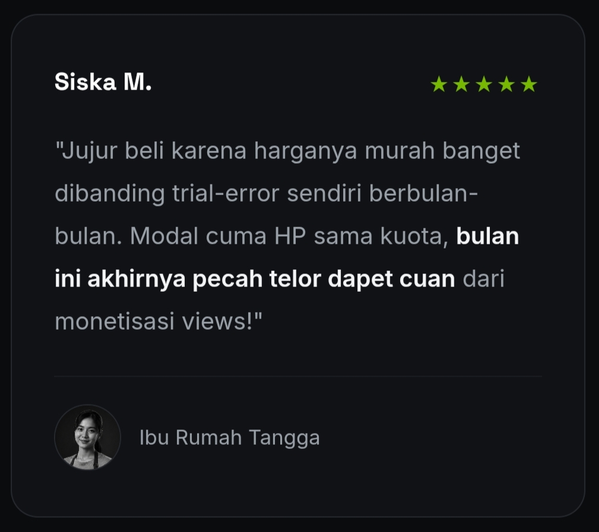
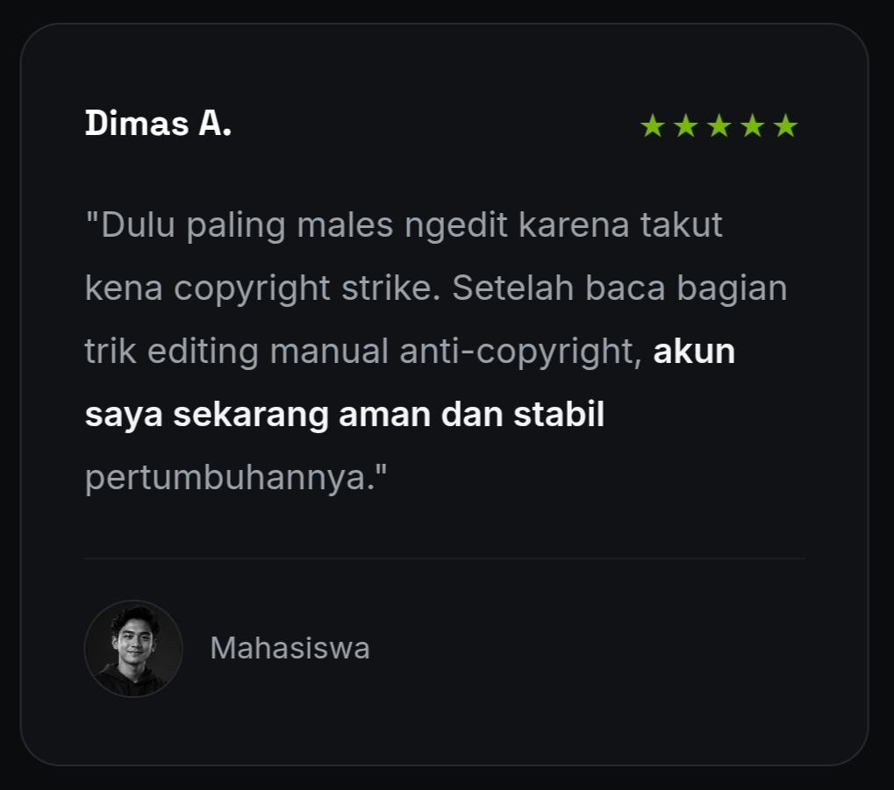

Blueprint Rahasia Cuan untuk pemula
Bangun sistem editing yang mengubah potongan video panjang menjadi konten viral penghasil cuan tanpa batas.
Senjata Utama Clipper Profesional
Seni Temukan Golden Moment
Kuasai teknik radar konten untuk menemukan momen paling viral dan emosional dalam hitungan menit.
Editing Tingkat Dewa
Panduan praktis membuat subtitle menarik, efek zoom, dan "perfect loop" yang bikin retensi meledak.
Retas Algoritma Short-Form
Pahami rahasia algoritma TikTok dan Reels untuk mendatangkan views jutaan tanpa perlu joget.
Mindset Eksekutor Buas
Tinggalkan kebiasaan amatir. Saya akan bongkar cara membangun mental baja dan sistem kerja harian yang konsisten menghasilkan karya.
Mesin Cuan Konten.com
Pelajari strategi rahasia memilih campaign, mendulang CPM tinggi, dan mencetak saldo jutaan rupiah dari platform secara otomatis.
Eskalasi Skala Agensi
Jangan kerja sendirian seumur hidup. Kamu akan belajar cara merekrut tim, membangun sistem batching, dan melipatgandakan penghasilanmu.
Bukti Nyata Hasil Ngeclip



Ebook Ini Wajib Dimiliki Jika Kamu…
Pemula Tanpa Pengalaman
Kamu tidak butuh PC sultan atau skill editing dewa, cukup mulai dari nol dengan alat seadanya.
Ingin Penghasilan Tambahan
Cocok untuk kamu yang ingin sumber cuan baru dari internet hanya dengan modal kuota dan konsistensi.
Paham Peluang Konten
Kamu yang sadar bahwa era video pendek adalah tambang emas yang sayang jika dilewatkan begitu saja.
Pertanyaan yang Sering Diajukan
Tidak. Kamu bisa mulai dengan laptop standar atau bahkan menggunakan smartphone dengan aplikasi seperti CapCut. Yang terpenting adalah konsistensi dan tekniknya.
Tentu. Saya mengajarkan prinsip "Fair Use" dan cara mengedit konten menjadi transformatif sehingga aman dari teguran hak cipta.
Kamu akan belajar cara memonetisasi klip melalui platform seperti Konten.com, di mana kamu dibayar berdasarkan jumlah views (CPM) dari campaign yang kamu kerjakan.
Sukses butuh proses. Jika kamu mempraktikkan "30-Day Clipper Challenge" secara disiplin, kamu akan melihat hasil nyata. Konsistensi selalu mengalahkan bakat mentah!
Ambil Blueprint Cuan Ini Sekarang Juga
Dimasa depan, persaingan Clipper Semakin Ketat, Sekarang adalah Kesempatan Emas untuk Kamu memulai.
N.B: Jangan menunda. Tren video pendek terus melesat, jadilah bagian dari Clipper profesional yang mencetak jutaan rupiah hari ini!